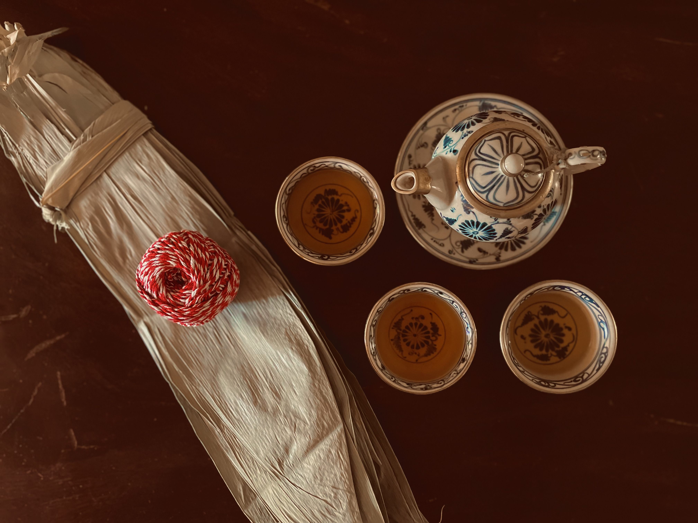
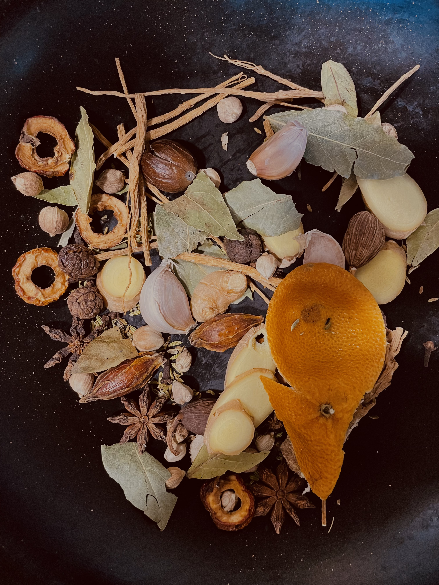
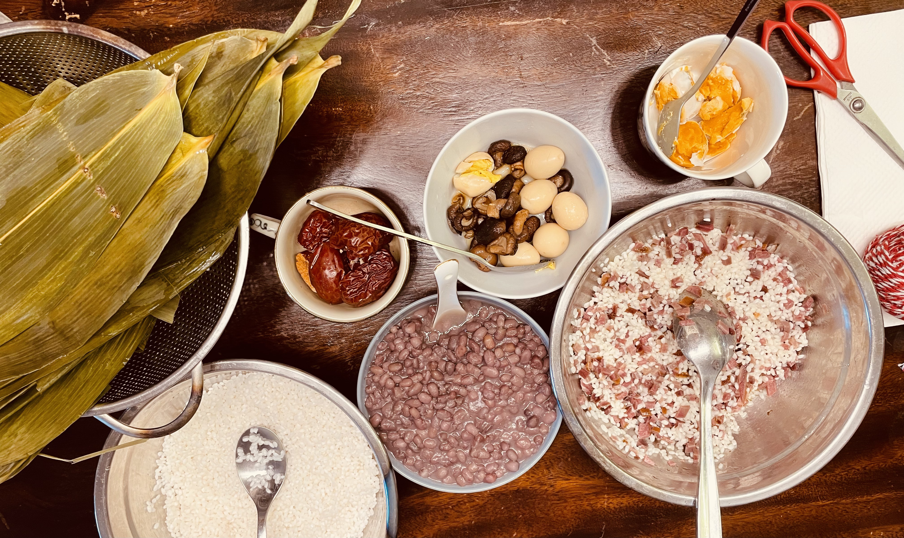

Freshly wrapped Zongzi · Makes 6
端午节's Zongzi — Nothing’s more festive than getting the family together and making some Zongzi.
Serves 6 (3 sweet, 3 savory) · Soak overnight · Cook 20-30 min
Sweet: Earthy, nutty red beans plus caramel-like chewy dates and rice.
Savory: Deep umami from spice braised pork, egg, and mushrooms, plus salted egg yolk with dark, soy-seasoned rice for a rich, slightly briny bite.
Aroma: Faintly sweet bamboo leaf, toasted medicinal spices, warm, powdery steamed-rice scent that fills the whole kitchen when cooking.

A quiet moment wrapping Zongzi and steeping tea
Zongzi dates back over 2,000 years to the Spring and Autumn Period (771–476 BCE) in Ancient China (honestly an incredibly interesting and theatrical era). The tradition as we know it, however, is tied to the Warring States Period that followed, and one man in particular: Qu Yuan, a devoted poet and minister who drowned himself in the Miluo River in 278 BCE after his kingdom fell.
In the one volume work Xu Qi Xie Ji by Wu Jun,the ghost of Qu Yuan appeared in a dream to a man named Ou Hui and instructed him to seal rice with leaves and bind them with colored string, to repel dragons that would otherwise consume the offerings. Today people just eat the food themselves and celebrate. A development that, I have to admit I am not mad about at all…
Zongzi come in many flavors and variations, but typically consist of glutinous rice wrapped in bamboo leaves into a triangular shape then cooked through. Sweet and savory are the two most common styles. Sweet Zongzi (tian zongzi) is more common in southern China and Taiwan, while ingredients used in Savory Zongzi like braised pork and egg yolk is beloved throughout Southeast Asia, eg. Malaysian and Singaporean cuisines. There's also a Northern Chinese Zongzi version with plain rice and red dates, simple and refined.
Star ingredient — bamboo leaves: Bamboo itself have always been a big part of Chinese culture, but wrapping Zongzi in Bamboo leaf isn’t just for show, bamboo leaf itself has its own unique, faint, sweet aroma, which pairs wonderfully with glutinous rice, creating a warm and subtle scent, a perfect canvas for any flavor combinations. Besides that bamboo leaves are naturally antibacterial, an ancient food preservation method.
By the Jin Dynasty (266–420 CE), zongzi was formally recognized in literature for both ritual and dietary uses. In 1983, archaeologists found actual zongzi in a Han dynasty tomb — over 2,100 years old. Someone packed zongzi for the afterlife. Honestly, wise move.

Spice and aromatics for the savory braise
This recipe contains two: Sweet Red Bean and Date, and Savory Braised Meat Zongzi. Zongzi is at best, a celebratory process, which makes it the perfect holiday food for special occasions.
Makes about 6 Zongzi (3 sweet, 3 savory). For this recipe measurements are guidelines, eyeball and adjust as you go. For some of these ingredients you might want to check out the Asian supermarkets.
The Base
Sweet Flavor
Savory Flavor
Braising Brine & Seasoning
The Night Before
Ingredient Prep
Assembly
No bamboo leaves? Skip the wrapping entirely — layer all the ingredients in a rice cooker and cook as normal. You'll get the same flavors with none of the folding. Alternatively, lay the leaves loosely on top of the rice and fillings before cooking in the rice cooker.
Wrapping tip: practice on the sweet zongzi first, since the filling is less messy than the savory version. The savory zongzi requires a little more prep and the ingredients can be harder to source, but the result is well worth it.
Typically, cooked Zongzi keeps in the fridge for up to 5 days, uncooked Zongzi even longer. Stick them in the freezer for up to 3 months (many stores will sell them ready made like that) making them the original meal-prep champion.
To reheat: steam or simmer in shallow water for 10 minutes, or microwave (still in leaves, loosely wrapped) for 3–4 minutes, not too long or they might get mushy.

Prepare for assembly. Rice, beans, dates, and the savory fillings